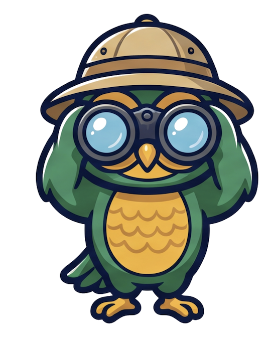
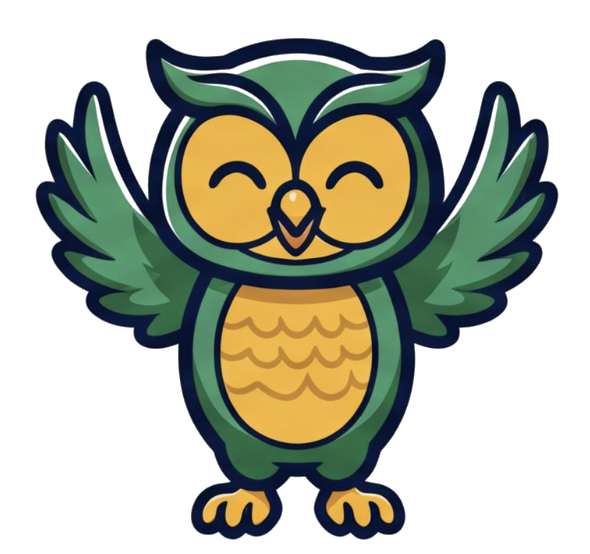
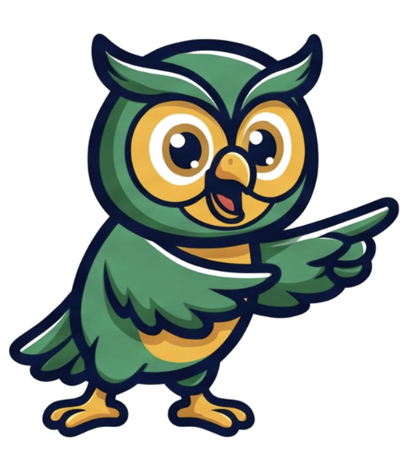
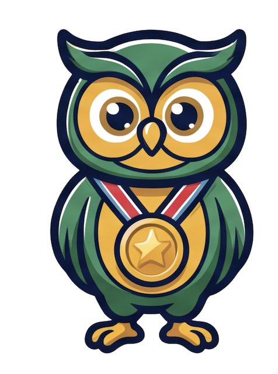

![Gugut Montessori]()
Gugut Full Library
Family Village is free. Unlock the other four worlds — all 29 books, every language — for the whole family.
99 birr
/ month
Monthly
Best value · Save 33%
799 birr
/ year
Yearly
- All 29 illustrated books across all 5 worlds, new titles added regularly
- Read-aloud with word-by-word highlighting
- Read in 6 languages — English, አማርኛ, Afaan Oromoo & more
- Reading streaks, quizzes & progress tracking
- Light on mobile data — small, fast-loading pages
Welcome back
Sign in to keep reading where you left off.
Read in
Topic
Start your reading streak!
Read a book to begin your streak 🦉
0
Books Read
0
Favourites
0
Languages
📖 Continue Reading
❤️ Favourites
⬇️ Downloaded for Offline
🔢
Counting My Day
🛠 Admin Dashboard
Manage your Gugut Library
—
Total Books
342
Readers
1.2k
Reads This Month
Top Languages
Top Age Bands
📤
Upload a New Book
PDF + audio file · Set language, age band & coverAll Books
Reading Level
🌱
Seedling
ዘር
0 books to next level
👩
Sule's Library
sshifaw@gmail.com · Parent & Admin
🏆 Badges Earned
First Read
3-Day Streak
Multilingual
7-Day Streak
20 Books
All Languages
⚙️ Settings
Gugut Full Library
Every book, every language — subscribe for the whole family
Night Mode
Dark theme for bedtime reading
Text Size
Medium
Reading Reminders
Daily reminder at 7:00 PM
Parental Controls
Set age lock for children's profiles
Classroom Mode
Share books with students via code
Human Voice (ElevenLabs)
Tap to set up — sounds like a real storyteller
About Gugut
Savannah Printing Press · Felek notebooks
Admin Access
Sign in to manage the library

My Reading Journey
Read 4 books in a world to complete it and move on!
0of 5
worlds
worlds
Memory Match
Find the matching pairs!
⭐ 0/6

You found them all!

Word Match
Tap the right picture!
⭐ 0
